Jobs list →

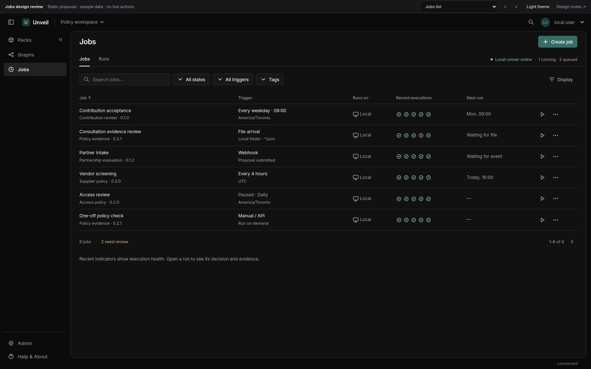
Proposal with illustrative data. Nothing here creates a job or calls an integration. Open a screen, use the top selector to move between states, or switch themes.
Open the full mock → · Download design notes · Read the review

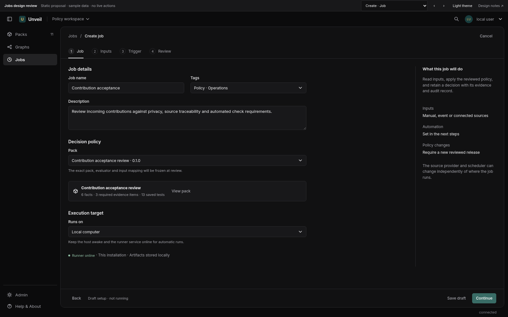
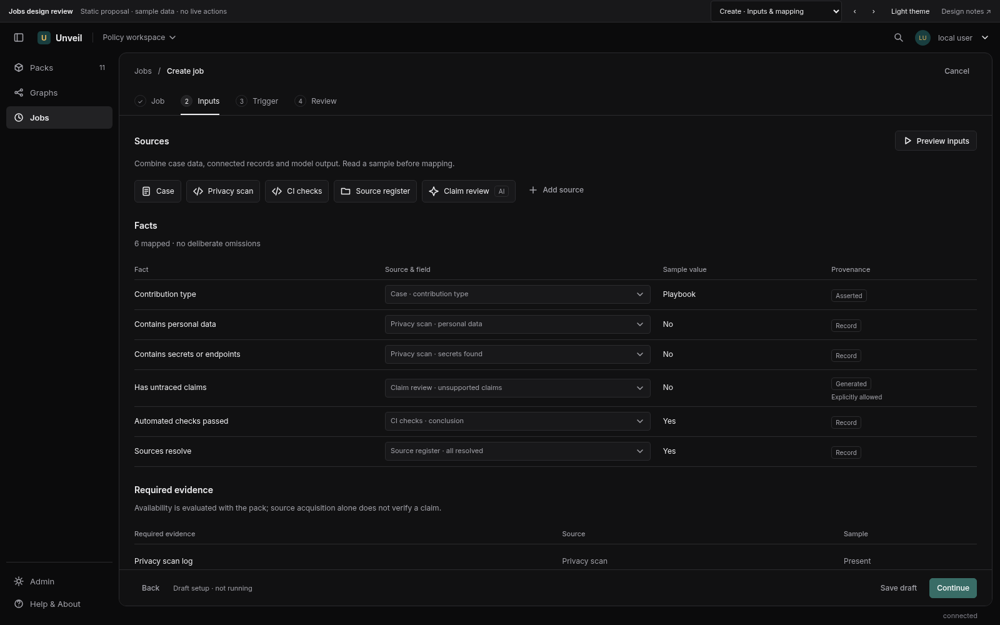
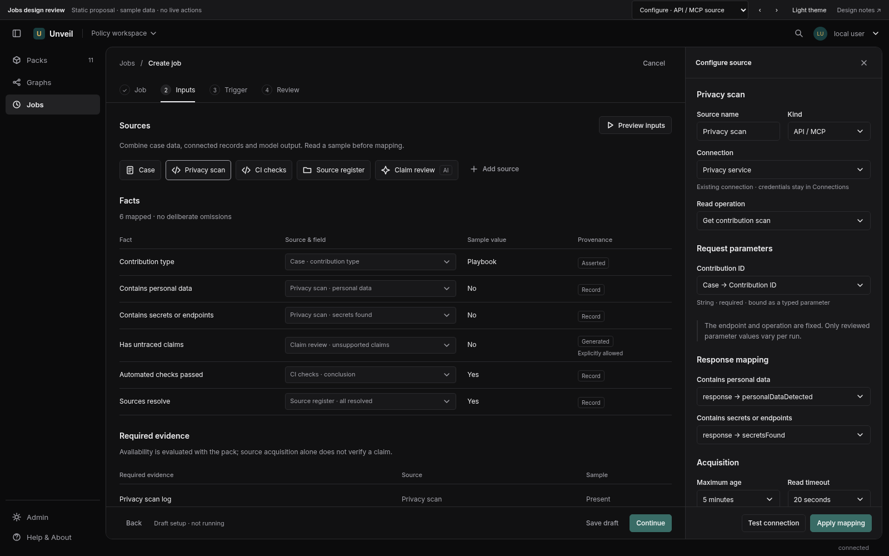
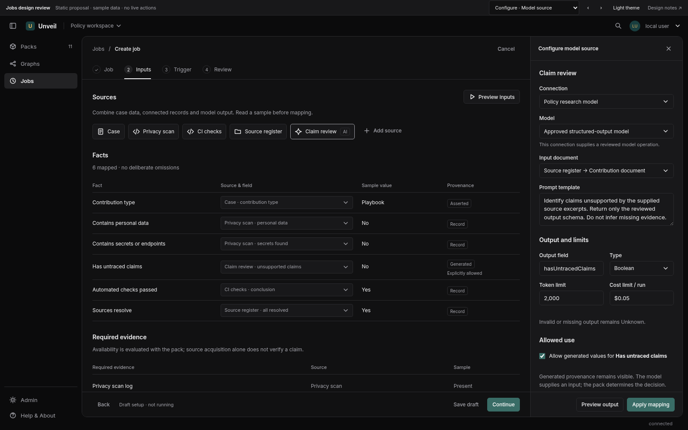
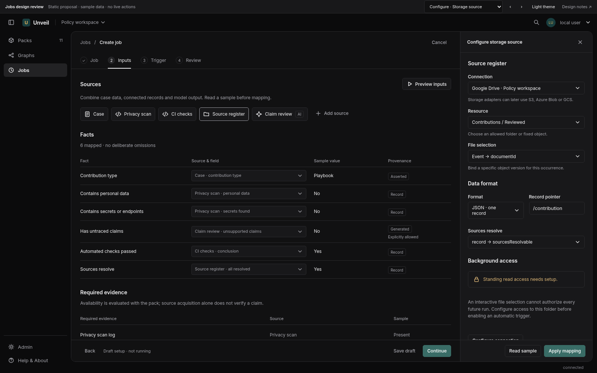
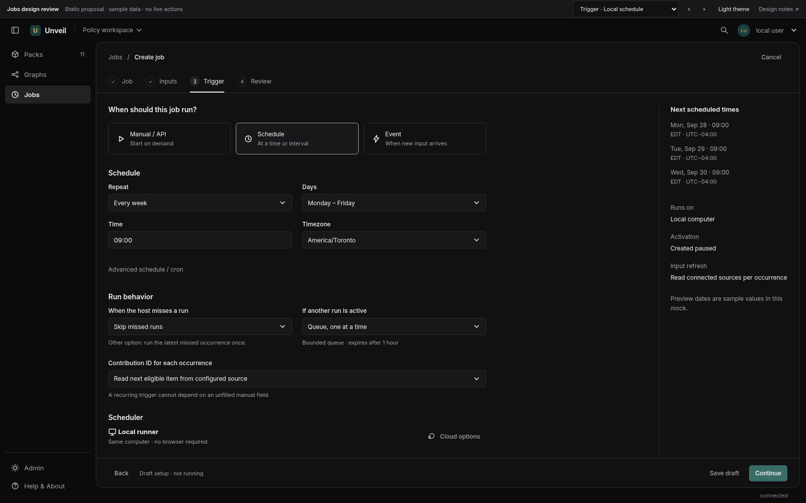
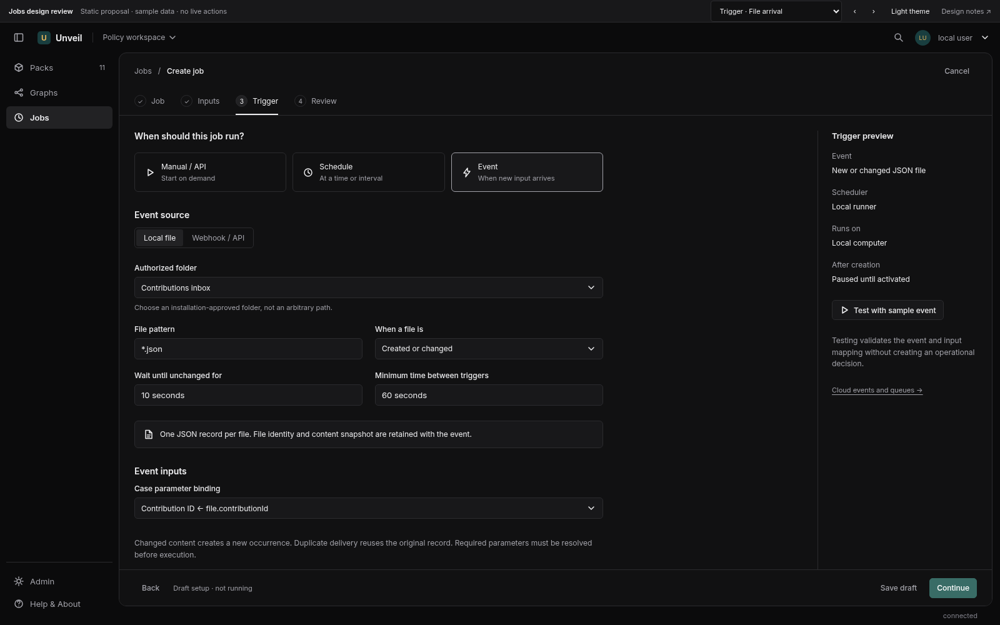
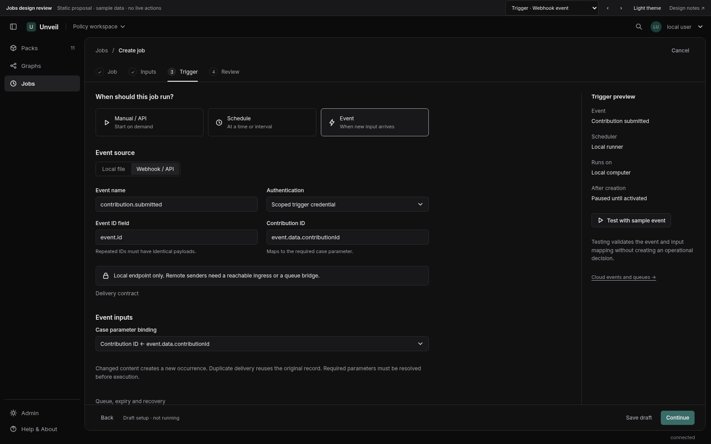
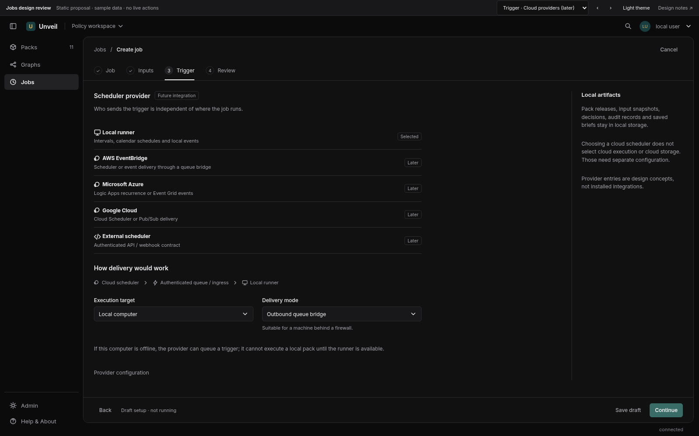
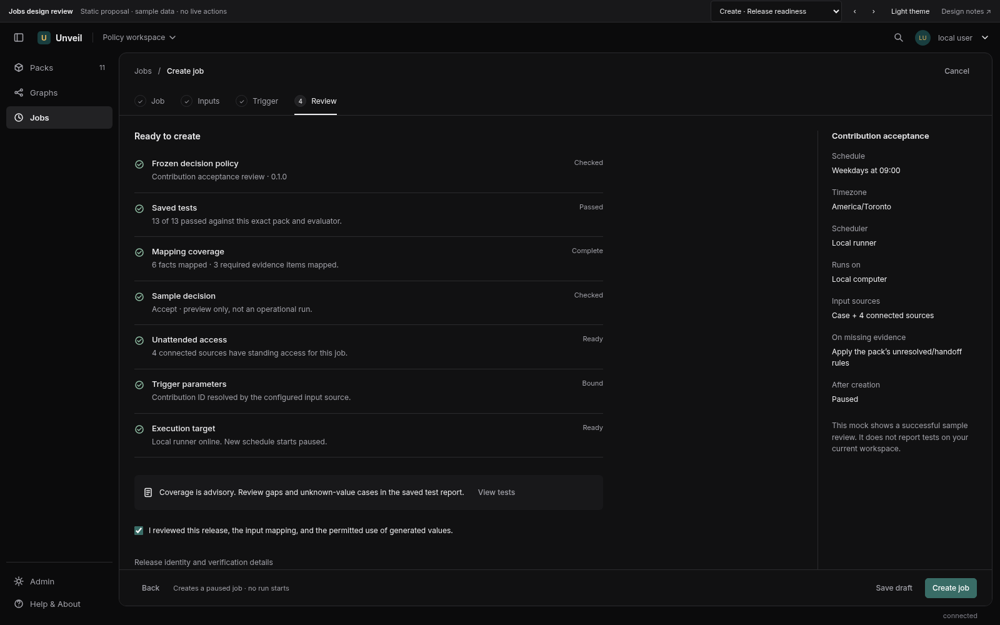
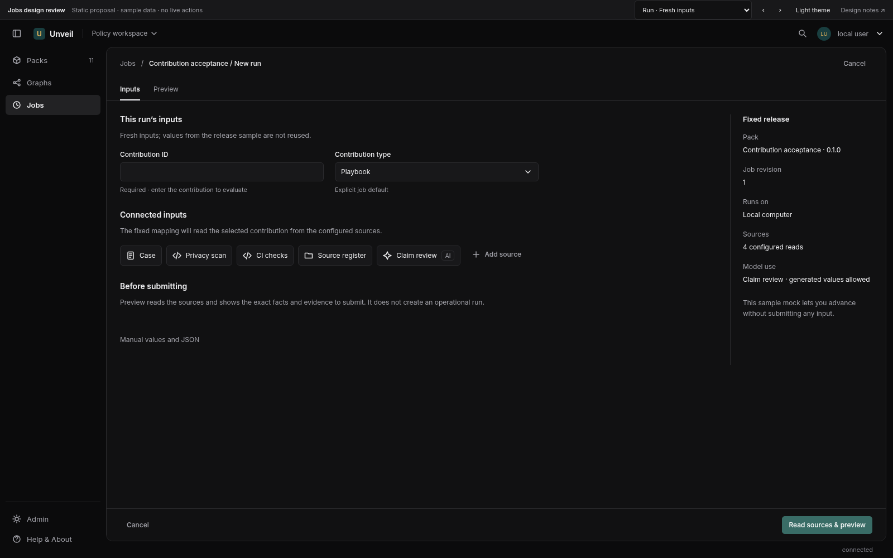
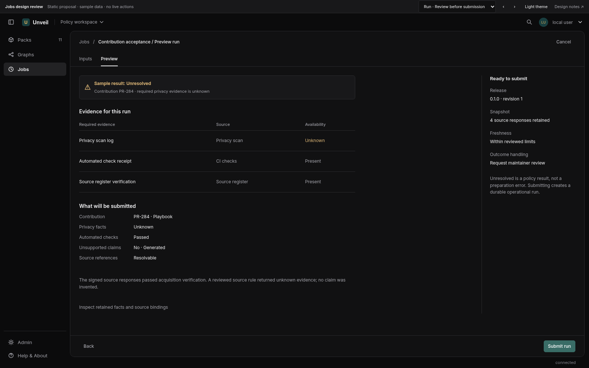
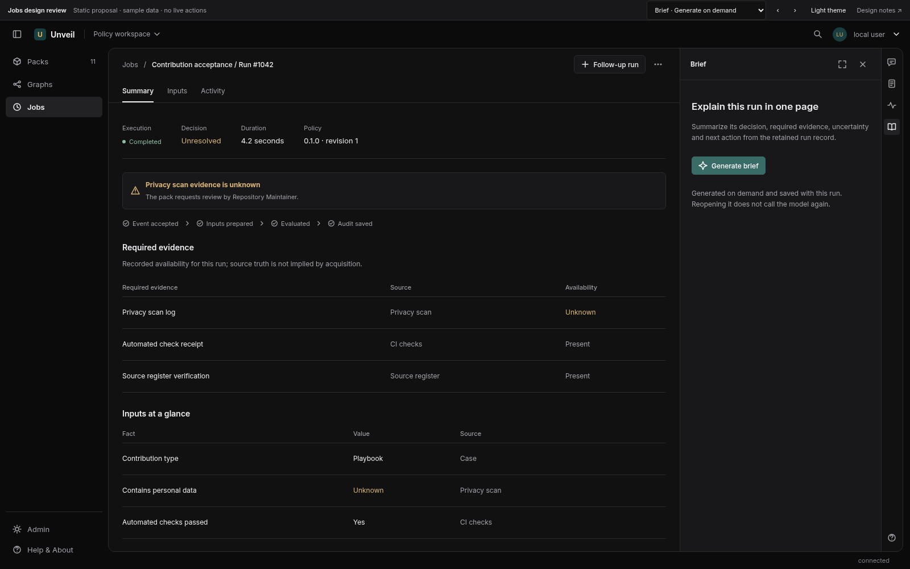
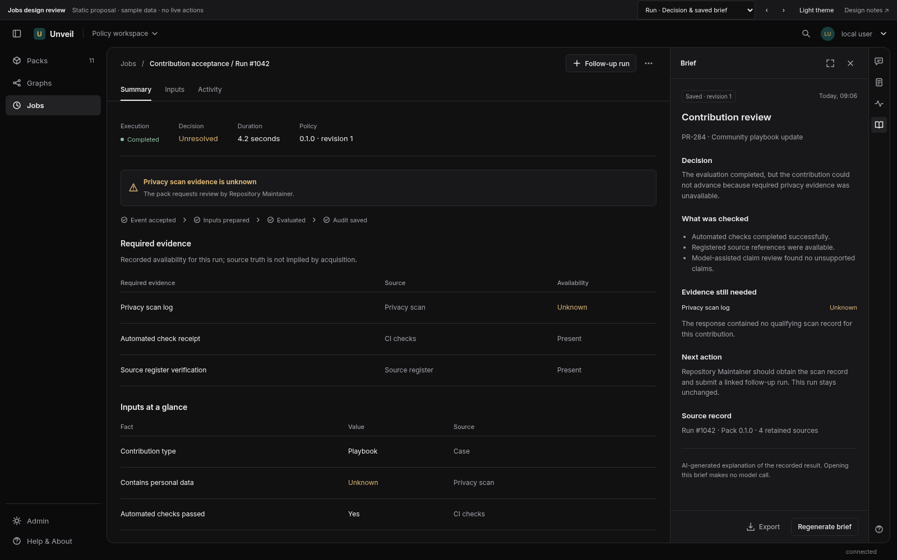
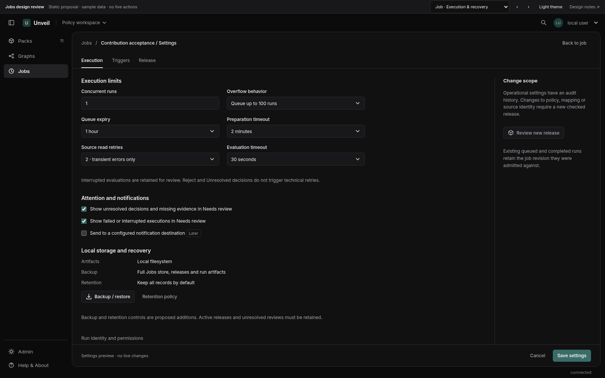
Design review • 26 September 2026 • Proposal only. The mock uses illustrative jobs, connections, releases, and results. No job, trigger, connection, or model invocation is created.
Keep Jobs in the main navigation. Use a compact, table-led workspace with Jobs and Runs views. Job creation is a full page with four steps: Job → Inputs → Trigger → Review. Job detail has Runs, Inputs, Triggers, Release; secondary settings live in its More menu. Use the existing single-tool right rail for Assistant, Details, Activity, and the saved one-page Brief. Never stack long chat and details vertically.
Borrow the dense operational table, trigger visibility, recent-run indicators, and contextual settings from the supplied Databricks screenshot. Apply Linear's restrained contrast, predictable header actions, small neutral icons, and reduced framing. Avoid copying Databricks' extra pipeline types, compute-cluster configuration, or a task graph that this product does not yet need. A pack is the decision policy; a job is its recurring application. Graphs remain a separate authoring destination until graph execution exists.
Read the live /jobs and /jobs/new screens, Desk JobsView.tsx, MappedInputFields.tsx, source input components, client types, mapping design, Runner README and mapping-v2 contract. Current capability:
| Area | Exists today | Required change |
|---|---|---|
| Runs | Durable local queue, immutable release, snapshots, audit, idempotent admission | Trigger occurrences, preparation before admission, configurable limits, cancellation/recovery states |
| Inputs | Manual JSON; one selected local/Drive JSON record; advanced v2 ordered case/file/MCP mappings | Typed forms, graphical mapping, saved source configuration, unattended acquisition |
| Source trust | Runner verifies v2 receipts, request commitments and target classes | Keep those guarantees under scheduling; add supported HTTP/SQL/model adapters |
| Release readiness | Exact snapshot validation and saved tests; coverage advisory | Present a compact checklist; add versioned job configuration and release promotion |
| Briefs | On-demand persisted job/run briefs | Make the rail entry and Generate/Regenerate actions discoverable |
| Triggers | Manual and authenticated API submission | Local interval/calendar scheduler, events, file monitoring; cloud adapters later |
| Operations | Desk-owned Runner companion; interrupted work remains visible | Optional OS service and host health; no browser timers |
| Retention | Local files and SQLite, manual stopped-store backup | Consistent backup/restore and bounded retention before sustained unattended use |
The current list search filters only fetched pages, so it can hide matching older jobs. The manual Run form starts from release sample values, risking accidental reuse. Jobs cannot currently be promoted to another release in place; their only revision is 1. Direct HTTP/model APIs are not yet supported in mapped-source catalog operations. A model-backed MCP tool can already be used with the required trusted profile and explicit generated-value admission. A selected Drive file uses an interactive grant, which is not an unattended authorization.
Use pack-referenced facts and evidence requirements to build the form. Pack references are not a complete input schema: infer boolean/enumeration controls only when justified, show suggested types as suggestions, and allow reviewed type/label configuration. Structured or ambiguous values retain an advanced JSON editor. Per-run values start empty. Use sample is an explicit action; sample values do not become defaults unless the author explicitly configures constants/default parameters.
Each source configuration has: name, existing connection, allowed read operation/resource, typed parameters, frozen request/query/prompt template, response schema/selection, freshness limit, timeout, bounded retry policy, and per-field mapping. Secrets stay in the connection credential store. Preview/read is explicit and may contact the provider; source selection alone does not. Parameter binding is structural. SQL strings use real bind parameters; never interpolate arbitrary strings into query text.
| Kind | User-facing configuration | Value class and behavior |
|---|---|---|
| Manual / event parameters | Human labels, allowed types/values, required parameters, explicit defaults | Asserted; blank/unknown stays omitted. False, zero, empty, null, absent and unknown are distinct. |
| Local file / storage | Select file or authorized location; file pattern, format, record pointer; standing access for unattended use | Local upload is asserted; acquired sources use the installation profile's class. Initial scope one JSON record; CSV and multi-record batches later. |
| API / MCP | Existing connection, approved operation, typed request fields, response paths | Record or generated according to trusted source profile; class cannot be relabeled by the mapping author. |
| Database | Connection, parameterized query or approved query operation, row selection | Record; wrong subject or ambiguous rows remain unresolved/error according to the reviewed rule. |
| Model | Provider/model, prompt template, structured output schema, temperature if supported, token/spend cap, timeout | Generated. Explicit target admission required, including generated influence passed through a later source. Invalid output becomes unknown; proof failure never becomes valid evidence. |
A model helps derive facts; Runtime still evaluates the frozen pack. A separate Design with AI authoring action may propose mappings and edge tests, but needs review before persistence. It is not an unrestricted agent loop running every scheduled occurrence.
Evidence has Present / Absent / Unknown, a linked document/record, subject match, and acquisition metadata. A transport receipt verifies how bytes were acquired, not their truth. Missing evidence is not silently promoted to present because a connection succeeded. Proof/schema failures block preparation and show no decision. A reviewed source rule may legitimately return unknown or absent and let the pack handle it. Do not silently substitute manual values after an integration error.
Sources are ordered with explicit dependencies. Runner's planner expands requests and derives values, not browser JavaScript. Reject cycles, duplicate target writers, unsupported transformations and unbound parameters. Every read fact must be mapped or deliberately omitted. Export/import advanced mappings without lossy number conversion.
Scheduling and acquisition must work without an open browser. First implement a durable scheduler in Runner, which can initially remain Desk's companion; Desk must stay running. Offer a separately managed OS service for genuine background operation. The machine must be awake. Closing the browser is safe; sleeping/stopping the host is not continued execution. Display host heartbeat and offline state on Jobs, not a generic message after every form.
Schedule controls: interval, daily/weekly calendar, one-time; IANA timezone; start/end; preview of the next three actual timestamps with offsets. Cron is advanced, with a declared dialect. Define DST behavior explicitly: default skip nonexistent calendar times and run once for repeated times; interval schedules use elapsed time. Default missed runs to Skip with a visible occurrence history; optional run latest once on recovery; bounded catch-up later. Missed/skipped occurrences are not fabricated runs.
Event controls: authenticated API/webhook, local file arrival/change initially; storage notifications, table changes, queues and polling later. A local-file watcher uses authorized roots, path/pattern filtering, ready/stable-file delay, debounce, bounded pending events, a persistent cursor and content/version identity. Reconcile after watcher loss; an event that expired or whose content changed cannot use a newer file under the old identity. Uploaded sample files and temporary picker grants cannot power an active recurring trigger.
For webhooks: scope credentials to the job/trigger, validate signature/token and timestamp, persist the event envelope before acknowledging, bind the event ID to its payload digest, and reject conflicting repeats. Retain a cursor for polling and paginate before advancing it. API credentials never appear in URL parameters. Public sources cannot reach a loopback-only endpoint; choose a managed reachable ingress or an outbound queue consumer when remote delivery is introduced.
Execution defaults: one active run per job, bounded FIFO queue, queue expiry, preparation deadline and evaluator timeout. Separate provider delivery retries, safe read acquisition retries, and evaluation attempts. Repeat delivery returns the original occurrence/run. Acquisition retries freeze successful earlier responses; changed/stale responses restart preparation explicitly. Once evaluation may have happened, do not automatically replay: preserve interrupted status and reconcile/ask for a linked follow-up. An unresolved or rejected decision is not a technical failure to retry away. Pause stops new automatic occurrences; active runs continue. Cancellation is separate and best effort; show cancelling until confirmed.
Use an adapter contract, not cloud-specific job definitions. A trigger produces a durable occurrence with workspace/job ID, trigger ID/revision, event ID or scheduled time, authenticated principal, payload digest, expiry and resolved job release revision. Runner snapshots the execution revision at admission; a queued occurrence never drifts to a later release. Preserve the occurrence-to-run relationship and attempt history.
Scheduler and execution target are independent. An AWS schedule may wake a local Runner through a queue bridge; selecting AWS does not move compute or artifacts to S3. A remote worker is a separate future capability with its own artifact-store policy. Do not promise exactly-once delivery; deduplicate admission and expose uncertain evaluation recovery.
| Repository | Responsibility |
|---|---|
| Desk | List/detail/forms, typed mapping UI, connection picker, preview/release review, trigger settings, briefs and run review |
| Runner | Job revisions, triggers/occurrences, durable scheduling and queue, server-side acquisition orchestration via Gateway, verification, local storage, recovery and retention |
| Gateway | Credentials, read-only provider adapters, normalized acquisition responses/receipts; extend catalog HTTP support before advertising HTTP SQL/model sources |
| Runtime | Pack/test evaluation and audit. No scheduling or provider credentials. |
| Spec | No change needed for this UI. Pack-level acceptable-source-class declarations remain a separate future proposal. |
No new repository/framework is needed initially. Put scheduler integrations behind Runner interfaces. Initial future adapters: AWS EventBridge Scheduler → SQS/bridge; Azure Logic Apps Recurrence / Event Grid → queue/bridge; Google Cloud Scheduler / Pub/Sub → queue/bridge. Support authenticated HTTP admission where the target is reachable. Persist provider IDs, health and reconciliation state, not just a cron string. Cloud options in the prototype are explicitly future concepts; production hides unsupported providers or labels them unavailable. Keep one source of scheduling authority and record provider changes to avoid double firing.
Acceptance examples: closing a browser does not halt preparation; duplicate event delivery creates one occurrence/run; host sleep follows the configured missed-run policy; a stale/invalid receipt cannot run; changed pack or mapping invalidates release approval; missing evidence can produce Completed + Unresolved; generated data cannot silently become record-class data; rerun never overwrites the original; briefs generate once and persist. Verify DST transitions, queue saturation, source revocation, file replacement, shutdown during acquisition/evaluation and recovery after acknowledgement loss.
These references inform the proposal; they do not imply feature parity or endorsement. The architectural choices and defaults above are recommendations for Desk.